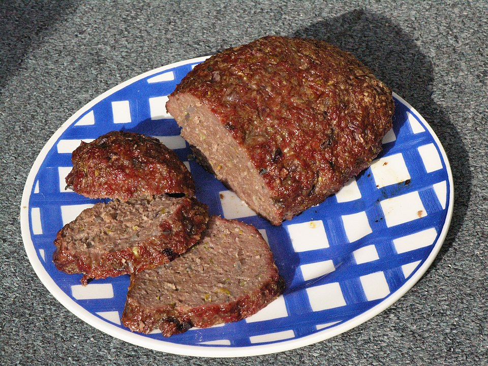

Home
Hackbraten Recipe

Von Matěj Baťha - Dieses Bild wurde im Rahmen der Förderung 'Beschaffung von wissenschaftlichen und fachlichen Bildern aufgenommen bzw. beschafft., CC BY-SA 3.0, Link
If you're looking for a hearty, comforting dish that practically cooks itself, Hackbraten is it! This traditional German meatloaf is baked in the oven and served with a rich, creamy Rahmsauce that takes it to the next level.
Ingredients
- 2 stale bread rolls
- 1 medium onion
- 70 g pickled gherkins (or cornichons; use dill picklesfor best flavor)
- 15 g parsley chopped
- 800 g ground meat
- 2 eggs medium size
- 1 ½ teaspoon salt
- 1 teaspoon pepper
- 1 teaspoon mustard
- 1 teaspoon sweet paprika powder
- 100 g usalted butter
Steps
- Slice the bread rolls into small pieces and soak them in warm water. Squeeze out any excess moisture well to prevent the meatloaf from becoming too wet.
- Finely chop the onions, gherkins, and parsley
- Heat 1 tablespoon of butter in a pan and fry the onions until they start to brown.
- In a large bowl, combine the ground meat, soaked bread, fried onions, eggs, mustard (affiliate link), gherkins, paprika powder, salt, and pepper. Mix thoroughly with your hands until well combined.
- Preheat your oven to 180°C (356°F). Lightly grease the bottom of an oven dish with butter.
- Transfer the meat mixture into the prepared dish and shape it into anoval loaf.
- Place the meatloaf in the oven and bake for approximately 45 minutes.
- Melt the remaining butter in a pan or microwave. Every 10 minutes, brush with a little butter to help it brown.
- Serve immediately. This meatloaf pairs well with mashed potatoes, potato dumplings, and boiled vegetables.